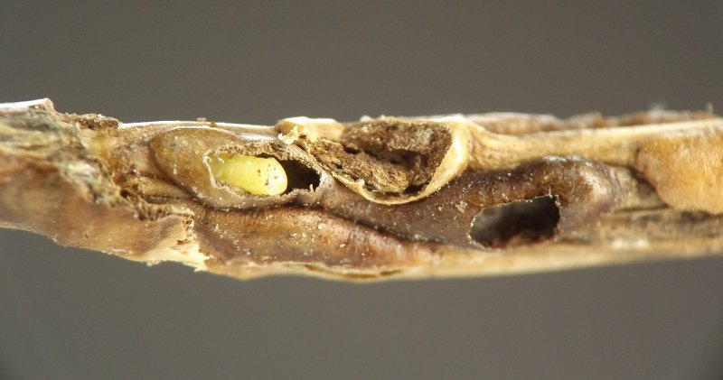
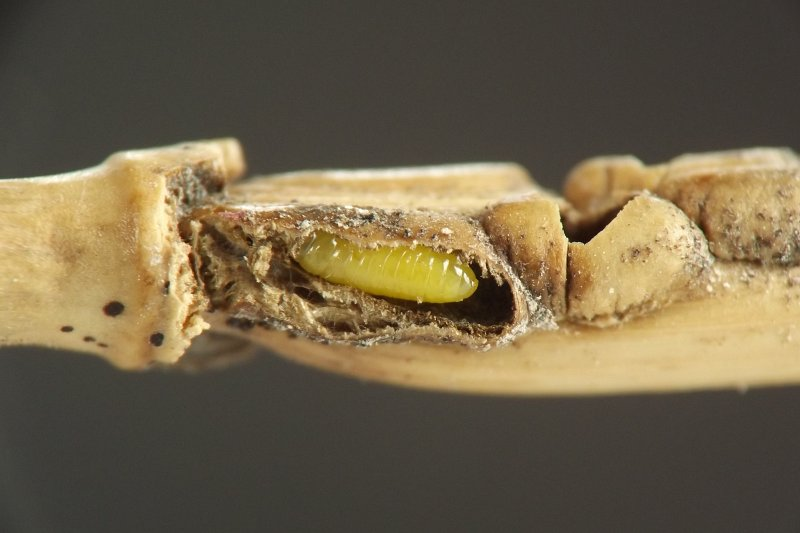
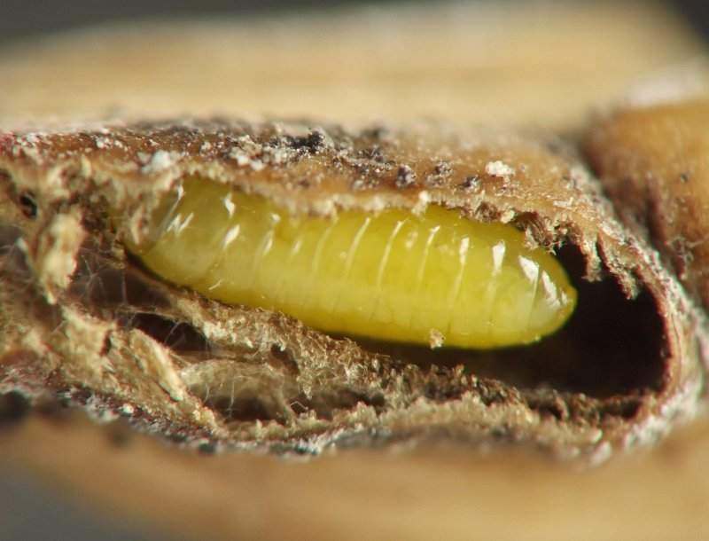
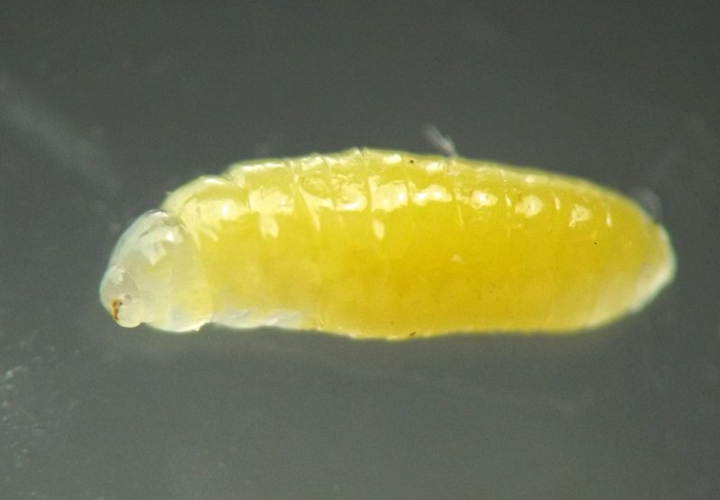
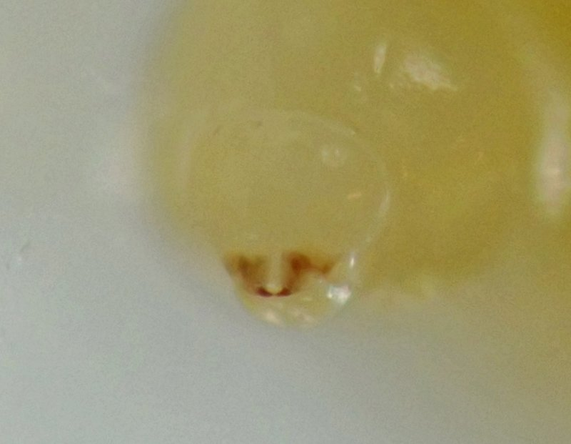
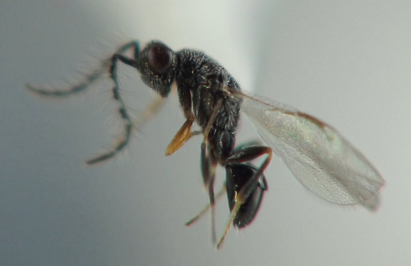
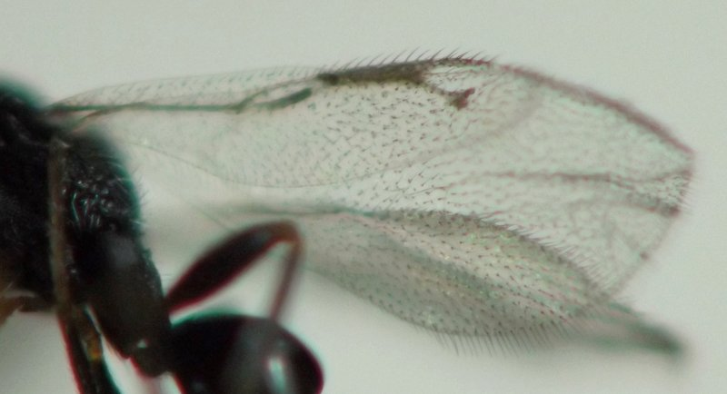
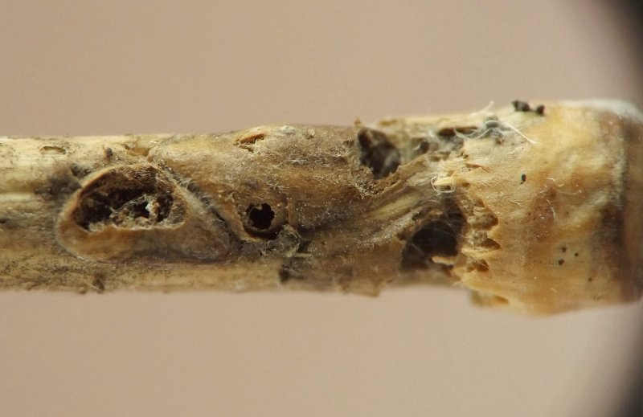

Local feeder (Hymenoptera: Eurytomidae) in stems of Elymus
| Record no.: | 0208 |
|---|---|
| Feeding guild: | Local feeder in stem |
| Taxonomy: | Hymenoptera: Eurytomidae: Tetramesa sp. |
| Stages observed: | trace, larva, adult |
| Distribution observed: | IA |
| Hosts in Elymus: | undetermined E. sp. (wild rye); tentative ID |
Forms ovoid "bump" galls in culms. I have observed that some overwintering galls appear to be pecked or chewed open, apparently by birds or rodents, in order to get to the larvae inside. I reared an adult wasp from an overwintered gall. It left a small, round, rough-edged exit hole in the outer wall of the gall. Apparently, seventeen Tetramesa species are known from Elymus (Krombein et al. 1979), and more than one is known to cause bumplike galls in culms (Phillips and Emery 1918; Phillips 1920; Phillips 1936; Youtie et al. 1987).

 Prev
Prev
{kind=link}
{kind=link}

{kind=link}

{kind=link}

{kind=link}

{kind=link}

{kind=link}

{kind=link}

- Krombein, K.V., Hurd, Jr., P.D., Smith, D.R., and B.D. Burks. 1979. Catalog of Hymenoptera in America north of Mexico. Smithsonian Institution Press.[return to in-text citation]
- Phillips, W.J. 1920. Studies on the life history and habits of the jointworm flies of the genus Harmolita (Isosoma), with recommendations for control. U. S. Dept. Agr., Bul. 808. 27 pp.[return to in-text citation]
- Phillips, W.J. and W.T. Emery. 1918. A revision of the chalcid-flies of the genus Harmolita of America north of Mexico. Proceedings of the United States National Museum 55 (2281): 433-471.[return to in-text citation]
- Phillips, W.J. 1936. A second revision of the chalcid flies of the genus Harmolita (Isosoma) of America north of Mexico, with descriptions of 20 new species. U.S. Department of Agriculture, Technical Bulletin No. 518. 25 pp.[return to in-text citation]
- Youtie, B.A., Stafford, M., and J.B. Johnson. 1987. Herbivorous and parasitic insect guilds associated with Great Basin wildrye (Elymus cinereus) in southern Idaho. Great Basin Naturalist 47(4): 644-651 (article 25).[return to in-text citation]
Page created: March 16, 2026. Last update: none